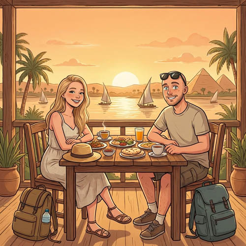

🧭 Египет без сюрпризов
4 правила, которые спасают
- Наличные важнее карт, особенно вне крупных отелей и ТЦ
- Вода только в бутылках, даже для чистки зубов лучше не рисковать
- Такси и лодки — цену обсуждать до посадки
- На пирамидах и базарах ничего не брать “просто посмотреть”
Что сказать себе заранее
Египет не стерильный и не “по-европейски ровный”, зато очень живой. Если изначально настроиться на торг, наличные, жару, офлайн-карты и чуть больше гибкости, поездка ощущается гораздо спокойнее и приятнее.
🚨 Как не попасть на развод
Типичные схемы
- “Подарок” — сначала суют в руки бесплатно, потом требуют деньги
- Подмена купюр — особенно если даёшь крупную банкноту молча
- “Друг, лучший магазин” — ведут туда, где получают комиссию
- “Сегодня закрыто” — пытаются свернуть тебя в другую лавку или экскурсию
- Такси без цены — итоговая сумма почти всегда окажется неприятной
Как защищаться спокойно
- “Ля, шукран” — нет, спасибо. Лучше говорить коротко и идти дальше
- Не останавливаться, если тебе уже что-то навязывают
- Сумму при передаче денег произносить вслух
- В такси, на верблюдах, на лодках цену фиксировать заранее
- Если что-то напрягает — просто уходить, это работает
🛍️ Шоппинг
| Товар | Ориентир цены | Где лучше | Совет |
|---|---|---|---|
| Футболка хлопок | $2–5 | Базары везде | Бери несколько — хлопок отличного качества |
| Платье летнее | $10–35 | Хургада, Каир | В Cleopatra — фиксированные цены, торг не нужен |
| Рубашка хлопок / галабея | $3–8 | Базары, Cleopatra | Египетский хлопок — мягче чем европейский |
| Кожаная сумка | $18–45 | Хан-эль-Халили, Каир | Торгуйся до 30–40% от первой цены |
| Кожаная куртка (пошив!) | $60–120 | Каир, базары | Шьют на заказ за 24–48 ч — размер + дизайн свой |
| Постельное бельё хлопок | $15–30 / комплект | Senzo Mall, базары | Egyptian cotton — мирового класса, везут домой все |
| Специи (зира, куркума, карри) | $1–3 / 100г | Базары Луксора и Каира | Покупать запаянными или в банках — удобнее в дороге |
| Алебастровые сувениры | $3–20 | Луксор, Гиза | Проверь: настоящий алебастр просвечивает на свет |
| Парфюм / аромамасла | $5–30 | Хан-эль-Халили, Каир | Луксовый запах за 1/10 цены европейского парфюма |
| Бренды (Nike, Zara, H&M) | Дешевле чем в РФ | City Stars Mall, Каир | Оригинал, гарантия, цены до –30–40% от российских |
💵 Деньги и оплата
💴 Наличные EGP (египетские фунты)
Основная валюта для базаров, такси, уличной еды, местных кафе. Менять доллары → фунты в аэропорту или в банкоматах. Курс: примерно 50 EGP = $1.
💳 Карты и доллары
В крупных отелях, ТЦ и ресторанах принимают карты Visa/Mastercard. Доллары берут повсюду, но дают сдачу в фунтах по невыгодному курсу.
🚕 Транспорт по городам
Uber и приложения
В крупных городах Египта работает Uber — фиксированная цена, никакого торга, история поездки. Там где приложение есть, это удобнее и дешевле уличного такси. Перед поездкой стоит установить заранее.
Хургада
Careem и такси работают, но лучше заранее понимать примерную цену. В туристических зонах спокойно, но “спеццены для туристов” встречаются часто.
Луксор
Uber нет. Такси, лодки и водителей на полдня здесь почти всегда нужно договаривать руками и обязательно до посадки.
🎒 Что взять с собой
Документы и деньги
Море и пляж
Одежда
Гаджеты и прочее
📻 Египетское радио фоном
Когда приезжаешь в новую страну, иногда хочется не плейлист, а именно местный шум жизни: речь, музыка, реклама, ведущие, новости. Можно включить в дороге, в отеле или пока собираешься на прогулку.
🛡️ Безопасность
✅ Где обычно спокойно туристам
- Курортные зоны Красного моря — обычно самый простой формат для первого раза
- Туристические районы Луксора и Асуана — храмы, набережные, отели, экскурсии
- В Каире спокойнее держаться популярных районов: Гиза, Замалек, Downtown, музеи и базары днём
- Аэропорты и крупные туристические объекты хорошо контролируются, но обычную осторожность никто не отменял
❌ Избегать
- Северный Синай — лучше не планировать без серьёзной причины и актуальной проверки безопасности
- Западные приграничные районы у Ливии — не для самостоятельных туристических поездок
- Прогулки по окраинам Каира ночью в одиночку
— Не фотографируй полицейских, военных, мосты и аэропорты
— В мечетях: обувь снять, плечи и колени прикрыты
— Чаевые (бакшиш) ожидают везде — $0.5–1 вполне достаточно
— Не пей воду из-под крана — только бутилированная
— Оформи страховку до отъезда
🍽️ Еда, вода и аптечка
Что безопаснее есть
Самый спокойный вариант — горячая еда, приготовленная при тебе: кебаб, кофта, кушари, фалафель, супы, запечённая рыба. Если в заведении много местных, это обычно хороший знак.
Что положить в аптечку
- что-то от кишечных сюрпризов
- солевой раствор / регидратация
- антисептик для рук
- солнцезащита и средство после солнца
- свои обычные лекарства с запасом
📱 Связь и интернет
SIM-карта: Vodafone Egypt, Orange, Etisalat или WE обычно продаются в аэропортах и салонах операторов. Регистрация по паспорту, лучше подключить интернет сразу после прилёта.
Wi‑Fi в отелях бывает нестабильным, поэтому мобильный интернет лучше иметь сразу: для такси, карт, переводчика и связи.

🗣️ Полезные слова
- Шукран — спасибо
- Ля, шукран — нет, спасибо
- Бикам? — сколько стоит?
- Гали — дорого
- Ахир калям? — последняя цена?
- Айва — да
- Ля — нет
- Тамам — хорошо, ок
- Маа саляма — до свидания
- Афван — извините / пожалуйста
Что лучше знать до вылета
- Наличные доллары — лучше новые, без дефектов, с запасом и мелкими купюрами
- Паспорт, страховка, брони и билеты офлайн
- Офлайн-карты скачаны заранее (Maps.me / Google Maps)
- Аптечка: от живота, солнцезащита, регидратация
- Обувь для рифов — кораллы острее, чем кажется
- Цену в такси и на лодках называть до посадки
- Вода — только бутилированная, везде и всегда
- «Ля, шукран» — главная фраза на любой базар
И главное: в Египте многое решается спокойствием, торгом и гибкостью — это не Европа, но именно поэтому так интересно.
🔗 Полезные ссылки
🚌 Автобусы, поезда, перелёты
- GoBus — автобусы по Египту
- 12Go.asia — билеты на автобусы онлайн
- Egyptian National Railways — официальный сайт железных дорог Египта
- ENR ticketing — официальная онлайн-покупка билетов на поезд
- Bookaway — поезда, автобусы и трансферы, часто удобнее для туристов
- 12Go — поезда и междугородний транспорт, удобно сравнивать варианты
- Aviasales — внутренние перелёты по Египту
- Uber — где доступен, обычно удобнее уличного такси
🏨 Жильё
- Островок — отели
- Ozon Travel — отели и апартаменты, можно оплачивать российской картой
- Яндекс Путешествия
- Airbnb / Booking — квартиры и отели в городах
- Официальный сайт отеля — обязательно сравнить перед оплатой, иногда там дешевле с учётом налогов
🏛️ Экскурсии и гиды
- Tripster — авторские экскурсии и русскоязычные гиды
- Sputnik8 — экскурсии, трансферы и групповые поездки
- GetYourGuide — удобно искать международные туры по Луксору и Каиру
- Viator — крупная база экскурсий с отзывами
- Tripify Tour — местные экскурсии из Хургады, Шарма и Марса-Алама
- Планета экскурсий Египет — русскоязычные экскурсии из Хургады и других курортов, удобно смотреть морские прогулки, Луксор, Каир и индивидуальные варианты; способ оплаты лучше уточнить заранее
- Albatross Travel Egypt — местный сервис экскурсий по Египту; можно использовать как ещё одну точку для сравнения цен, программ и отзывов. Из удобного: у них можно уточнить оплату онлайн переводом в рублях
🆘 Экстренные контакты
- Полиция Египта: 122
- Скорая: 123
- Консульство РФ в Каире: +20-2-27480353
- Туристическая полиция: 126
🌡️ Погода и прочее
- Весна и осень обычно комфортнее для городов и экскурсий
- Летом в Луксоре и Каире может быть экстремально жарко
- Красное море часто тёплое и подходит для купания большую часть года
- Розетки: европейский тип F (как в РФ)
- Часовой пояс: UTC+2 (−1 ч от Москвы)
